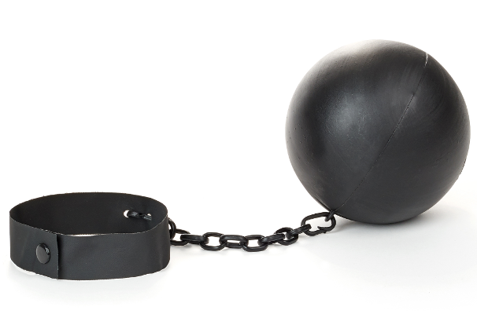
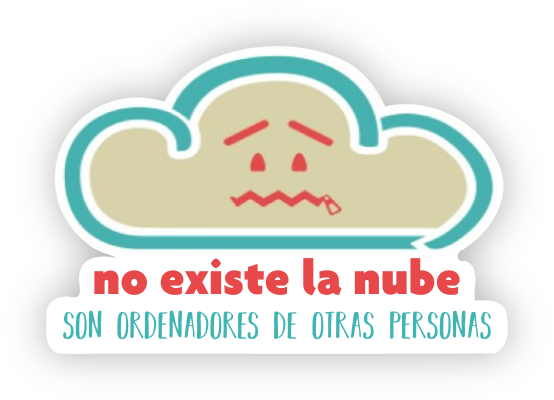
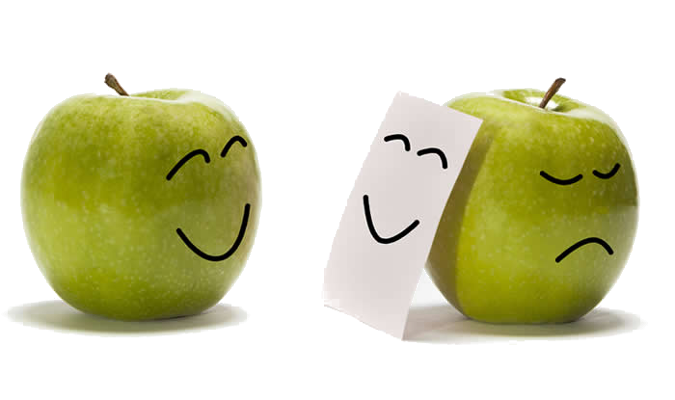
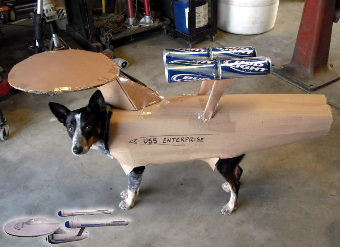
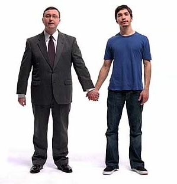

Free software for smart people
Utilidades para periodistas y diseñadores


Imaginemos por un momento que somos extraterrestres y venimos a la Tierra con un oscuro objetivo en mente...
¡Trabajar con software libre!
Jesús David Navarro
En el vídeo podéis ver una demo con algunos de los trabajos en el apartado de Desarrollo y Diseño Web, Accesibilidad y Usabilidad que he realizado.
Como es de suponer, todos estos trabajos han sido reliazadas usando software libre y bajo GNU/Linux.
La Pela
Mientras que el software privativo suele acarrear unos costes de licenciamiento, el software libre suele ser totalmente gratuito.
Think different
Seguro que se te ocurren muchas cosas en las que gastar tu dinero mejor que en pagar licencias.

Libertad
Mucha gente cree que el pago por el software privativo es por su adquisición, pero, en realidad, en muchos casos es sólo por el derecho a usarlo.
Futuro
¿Qué ocurrirá en el futuro con mis archivos guardados en un formato cerrado y propietario?

"La nube"
El paradigma de la falta de libertad y control es "La Nube", donde los usuarios almacenan su información sin tener, muchas veces, control alguno sobre ella.

Ética
Podría resultar, hasta cierto punto, hipócrita, trabajar por la libertad de información o los derechos de las personas mientras se emplean soluciones que atentan contra ambas cosas.
¿Qué tipo de cosas podemos hacer con software libre?

Usar Software Libre
"Profesionalmente"
¿Está preparado el Software Libre para ser usado Profesionalmente?

¿Quién es desarrollador y quién diseñador?
Durante mucho tiempo nos han adoctrinado para que valoremos más la apariencia que la esencia, el aspecto que el fondo de las cosas.
Hasta tal punto nos han influenciado así, que despreciamos a la gente sin conocer su valía, sólo por que se parezcan a lo que se nos dijo que deberían parecer para ser quienes son.
Así, por ejemplo, es común que en el mundo de las nuevas tecnologías la valoración profesional de una persona, a veces, se evalúe teniendo en cuenta el aspecto que tiene y las herramientas que usa, en lugar de por sus conocimientos y capacidades.
Profesional
Definición según la Real Academia de la Lengua Española.
¿Son profesionales las herramientas o las personas?
Qué es más importante, ¿El indio o la flecha?, ¿La raqueta o el tenista?...
NOTA: Idea extraída de una reflexión y conferencia de mi gran amigo Gez; profesional donde los haya, que sólo usa software libre en el desarrollo de sus sobresalientes trabajos.